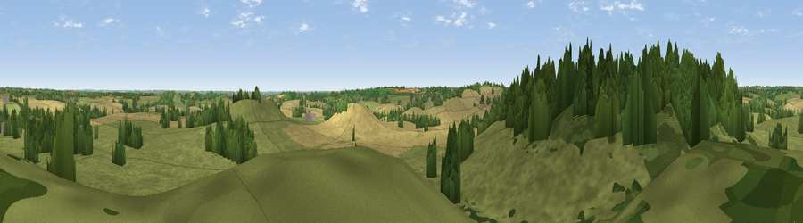

Viewpoint near Shutford
#26890 in England · top 52% of its area beats it · near ShutfordWhere it is
The exact computed spot (SP 38325 39725). Click the marker for map links.
The view, rendered

A 360° render of this exact spot computed from the terrain model, tree cover and land cover — summer colours, afternoon light, calibrated against photographs of famous viewpoints. Real trees, hedges and buildings will differ in detail.
The panorama
Grey silhouette: terrain skyline in each direction (720 bearings, Earth curvature and refraction included). Dashed green: skyline with trees (+15 m) and buildings (+8 m) as obstacles. Blue strip: how far the ground is visible on each bearing.
Where the view opens
Wedge length = distance to the farthest visible ground on that bearing (vegetation-aware). Rings at 10, 25 and 50 km.
What fills the view
64% grassland · 18% cropland · 17% woodland ·
Angular shares of the visible panorama (visual magnitude), not map area. Landscape diversity 0.41 (0–1 Shannon).
Key numbers
More beautiful places nearby
The staircase of upgrades: each row has a higher view potential than everything closer. Driving times are estimates from straight-line distance, calibrated against real road routing — check an actual route before setting out.
| Place | Direction | Drive | Score |
|---|---|---|---|
| Viewpoint near Burdrop | WSW · 2 km | ~6 min | 47.8 |
| Epwell Hill | WNW · 4 km | ~8 min | 60.6 |
| Shenlow Hill | NW · 4 km | ~9 min | 65.9 |
| Viewpoint near Upper Tysoe | WNW · 5 km | ~11 min | 70.4 |
| Viewpoint near Radway | N · 9 km | ~17 min | 71.7 |
| Viewpoint near Ilmington | W · 18 km | ~31 min | 72.6 |
| Viewpoint near Meon Vale | WNW · 22 km | ~36 min | 77.0 |
| Broadway Hill | W · 27 km | ~43 min | 77.7 |
52.05459, -1.44248 · source: screening · position refined by local search. Computed location — check access rights before visiting.